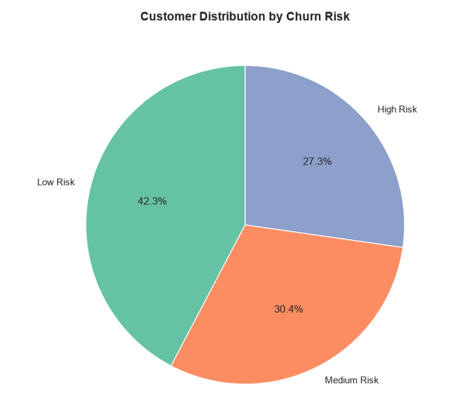
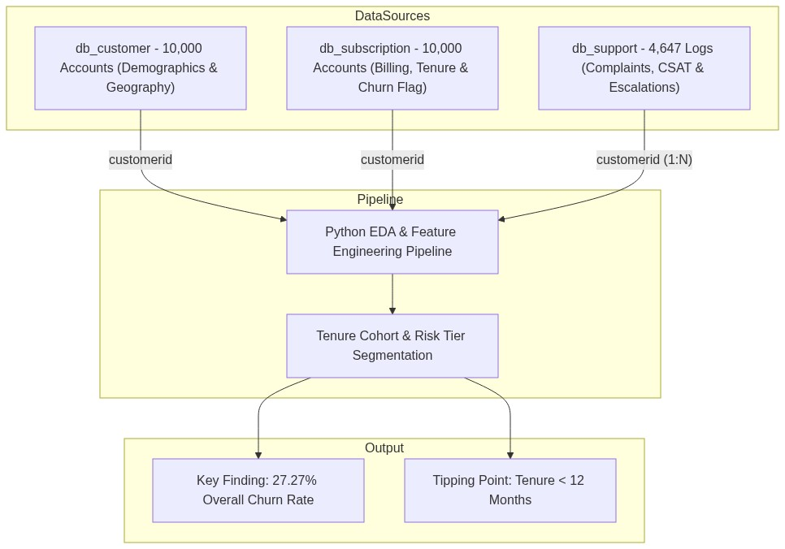

Customer Churn Behavioral Analytics & Retention Engine
End-to-end diagnostic subscription modeling across 10,000 customer accounts, multi-table feature engineering, and $73,267.54 monthly recurring revenue (MRR) protection framework. Conducted rigorous exploratory data analysis (EDA) across subscriber demographics, subscription tiers, and 4,647 customer support tickets to pinpoint true cancellation catalysts versus false correlation traps.
Monthly recurring cash flow exposed; 63.2% concentrated in Premium users.
2,727 cancellations across 10,000 multi-tier subscription accounts.
7,273 active paying subscribers generating predictable lifetime value.
Proves customer service escalations do NOT cause cancellations.
Diagnostic Visualization Suite & Statistical Views
Interactive 2.2-second rotation cycling through 5 core statistical perspectives, tenure distributions, and diagnostic matrices.

Low Risk accounts represent 42.3% (4,232 users), Medium Risk 30.4% (3,041 users), and High Risk 27.3% (2,727 users). The high-risk cohort (Score 70+) perfectly aligns with the historical 2,727 cancellations, validating the diagnostic score calibration.
Python Diagnostic Pipeline & Feature Engineering Architecture
Multi-table relational data pipeline orchestrating 10,000 subscriber records, 10,000 subscription plans, and 4,647 customer support interaction logs into a clean master analytics dataset.

Multi-Table Ingestion
Ingests 3 relational entities: db_customer (10K demographics), db_subscription (10K billing & status), and db_support (4,647 complaint logs).
Categorical Scrubbing
Harmonizes mixed gender entries into clean Male/Female binaries, rectifies string typos ("Refferal" ➔ "Referral"), and imputes missing country values.
Row-Safe Left Joins
Aggregates 1:N customer support tickets into single-row customer summaries (complaint count, escalations, mean CSAT) before joining, preventing dataset row explosion.
Diagnostic Modeling
Constructs 26 analytical features: tenure day counters, cohort buckets, and $73,267.54 monthly recurring revenue risk models grouped by plan tier.
Vectorized Logic & Support Aggregations
Core Python implementations utilized to transform unstructured multi-table data into clean cohort signals, avoiding common survivor bias and cartesian explosions.
# Vectorized binary cancellation flag
df_sub['churn_flag'] = np.where(
df_sub['cancellation_date'].notnull(), 1, 0
)
# Robust tenure duration logic
effective_end = df_sub['cancellation_date'].fillna(
pd.to_datetime('today')
)
df_sub['tenure_days'] = (
effective_end - df_sub['subscription_start_date']
).dt.days
# Cohort binning
bins = [-1, 180, 365, 730, 99999]
labels = ['0-6 Mo', '6-12 Mo', '1-2 Yr', '2+ Yr']
df_sub['tenure_group'] = pd.cut(
df_sub['tenure_days'], bins=bins, labels=labels
)Vectorized conditioning accurately marks churn dates while imputing active subscriber tenure without runtime row-iteration overhead.
# Group multiple tickets into 1 row per customer
df_support_agg = df_support_clean.groupby('customerid').agg(
total_complaints=('customerid', 'count'),
total_escalations=('escalations', lambda x: (x == 'Yes').sum()),
avg_csat_score=('csat_score', 'mean'),
last_complaint_date=('complaint_date', 'max')
).reset_index()
# Safe left-join to master dataset
df_master = df_sub.merge(
df_support_agg, on='customerid', how='left'
)
df_master['total_complaints'] = df_master['total_complaints'].fillna(0)Guarantees exactly 10,000 master customer rows by flattening multi-ticket customer support histories prior to left-joining.
# Total Monthly Recurring Revenue at Risk
mrr_at_risk = df_master[
df_master['churn_flag'] == 1
]['monthly_charges'].sum()
# Output: $73,267.54
# Tier concentration breakdown
tier_exposure = df_master[df_master['churn_flag'] == 1].groupby(
'plan_type'
)['monthly_charges'].agg(['count', 'sum']).rename(
columns={'count': 'churned_users', 'sum': 'mrr_lost'}
)
tier_exposure['mrr_share_pct'] = (
tier_exposure['mrr_lost'] / mrr_at_risk * 100
)Uncovers that while Premium churn rate matches Basic (~27%), Premium subscribers account for 63.2% ($46.3K/mo) of total revenue lost.
# Full Pearson correlation matrix
features = [
'monthly_charges', 'tenure_days', 'total_complaints',
'total_escalations', 'avg_csat_score', 'churn_flag'
]
corr_matrix = df_master[features].corr()
# Seaborn styled heatmap with mask
plt.figure(figsize=(10, 6))
sns.heatmap(
corr_matrix, annot=True, cmap='coolwarm',
fmt='.2f', linewidths=0.5, vmin=-1, vmax=1
)
plt.title('Correlation Heatmap of Key Metrics', fontsize=14)Validates independence of support complaints (0.00 correlation to churn) and exposes multi-collinearity boundaries across user engagement.
Data-Driven Retention Architecture & LTV Protection
Actionable business interventions designed to mitigate high-value subscription churn and re-architect customer onboarding schedules.
VIP Premium Protection
Deploy white-glove onboarding and dedicated account managers to Premium users. Safeguarding top-tier accounts protects 63.2% of the $73.3K monthly exposure.
Tenure Tipping Point (Mo 1–12)
Automate milestone engagement surveys at Day 30, 90, and 180. Intervening before month 12 captures the cohort before historical cancellation boundaries activate.
Decouple Support from Churn KPIs
Since complaints show 0.00 correlation with churn, refrain from blaming support teams for churn. Re-focus retention teams on product pricing and feature adoption.
Cohort Survival Standardization
Shift reporting from dynamic run-date tenure to fixed monthly acquisition cohorts. This eliminates survivor bias where older cohorts appear falsely loyal.